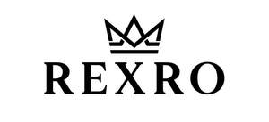

Trade Mark Journal No.2025/016 18 April 2025
UK00004184131 3 April 2025 (25,35)

- Class 25
- Clothing; Knitwear [clothing]; Jackets [clothing]; Ready-to-wear clothing; Woolen clothing; Furs [clothing]; Garments for protecting clothing; Clothing layettes; Layettes [clothing]; Linen clothing; Clothes; Jerseys [clothing]; Denims [clothing]; Cashmere clothing; Shorts [clothing]; Leather clothing; Clothing of leather; Leather (Clothing of -); Silk clothing; Collars [clothing]; Parts of clothing, footwear and headgear; Knitted clothing; Veils [clothing]; Windproof clothing; Hoods [clothing]; Embroidered clothing; Wristbands [clothing]; Belts [clothing]; Belts for clothing; Waterproof clothing; Rainproof clothing; Casual clothing; Jackets being sports clothing; Jackets (Stuff -) [clothing]; Stuff jackets [clothing]; Bottoms [clothing]; Playsuits [clothing]; Clothing for leisure wear; Ready-made clothing; Trunks being clothing; Woven clothing; Infant clothing; Leisure clothing; Clothing for sports; Sports clothing; Athletic clothing; Clothing for children; Tops [clothing]; Clothing for infants; Water-resistant clothing; Men's clothing; Hoodies; Sweatshirts; Hooded sweatshirts; T-shirts; Hooded sweat shirts; Shirts; Short-sleeved T-shirts; Turtleneck shirts; Hooded pullovers; Long-sleeved shirts; Beanies; Short-sleeve shirts; Camouflage shirts; Short-sleeved shirts; Tee-shirts; Fleece jackets; Corduroy shirts; Tracksuits; V-neck sweaters; Collared shirts; Shirts for suits; Sleeved jackets; Sleeveless jackets; Sweat shirts; Sweaters; Sweatpants; Jackets; Fleece pullovers; Knit shirts; Open-necked shirts; Men's and women's jackets, coats, trousers, vests; Mock turtleneck shirts; Cardigans; Turtleneck pullovers; Yoga shirts; Denim jackets; Turtleneck sweaters; Snowboard jackets; Balaclavas; Sports shirts; Tank-tops; Camouflage jackets; Turtlenecks; Casual shirts; Pullovers; Dress shirts; Knit jackets; Sleeveless pullovers; Moisture-wicking sports shirts; Fleece shorts; Sweat jackets; Jumpers [sweaters]; Quilted jackets [clothing]; Sleeveless jerseys; Sport shirts; Printed t-shirts; Overshirts; Hooded tops; Jumpers [pullovers]; Fleece vests; Hunting shirts; Polar fleece jackets; Polo shirts; Trenchcoats; Soccer shirts; Tracksuit tops; Sports shirts with short sleeves; Night shirts; Golf shirts; Sheepskin jackets; Leggings [trousers]; Jumpsuits; Polo sweaters; Football shirts; Blouson jackets; Rugby shirts; Windcheaters; Casual jackets; Mock turtleneck sweaters; Woven shirts; Sweatsuits; Aloha shirts; Sports jackets; Fur coats and jackets; Fleece tops; Overcoats; Stuff jackets; Fur jackets; Tracksuit bottoms; Jeans; Ramie shirts; Bomber jackets; Under shirts; Collars for dresses; Wind-resistant jackets; Padded jackets; Snowboard trousers; Clothing for men, women and children; Underwear for women; Underclothing for women; Clothing for babies; Clothing for cyclists; Clothing for gymnastics; Dance clothing; Girls' clothing; Women's clothing; Smart clothing; Baby clothes; Clothing made of leather; Coats for men; Socks for men; Jogging bottoms; Sweat bottoms; Baby bottoms; Tops; Chemise tops; Tube tops; Jogging tops; Tank tops; Baselayer tops; Vest tops; Turtleneck tops; Crop tops; Yoga tops; Baby tops; Pants; Warm-up tops; Stretch pants; Knit tops; Knitted tops; Denim pants; Waterproof pants; Shorts; Jogging pants; Trousers; Undershirts; Baseball hats; Caps [headwear]; Caps; Socks; Slipper socks; Anklets [socks]; Woollen socks; Trouser socks; Men's socks; Sports socks; Track suits; Track jackets; Suits; Jogging suits; Running Suits; Down suits; Warm-up suits; Gym suits; Jump Suits; Jogging outfits; Jogging sets [clothing]; Jogging bottoms [clothing].
- Class 35
- Retail services connected with the sale of clothing and clothing accessories.
Imran Tariq